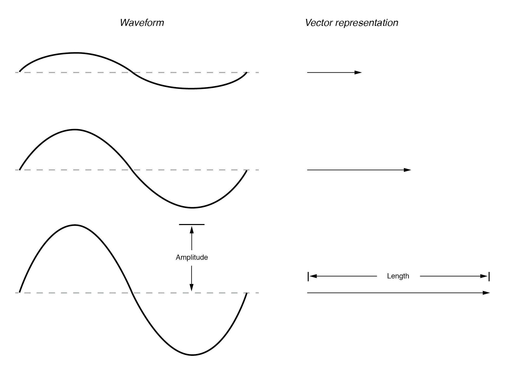
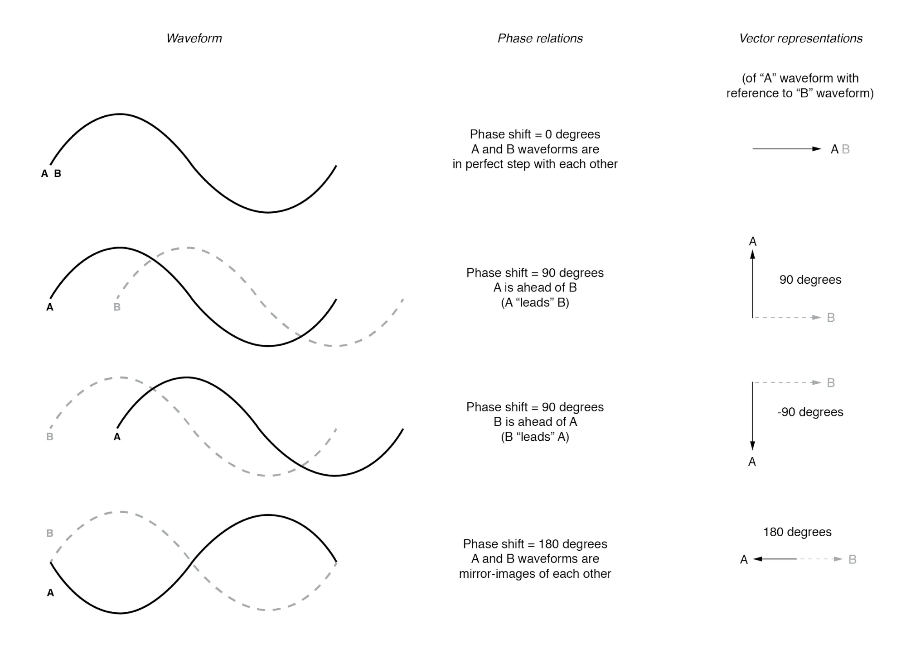
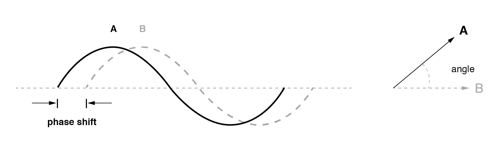

OK, so how exactly can we represent AC quantities of voltage or current in the form of a vector? The length of the vector represents the magnitude (or amplitude) of the waveform, like this: (Figure below)

The greater the amplitude of the waveform, the greater the length of its corresponding vector. The angle of the vector, however, represents the phase shift in degrees between the waveform in question and another waveform acting as a “reference” in time.
Usually, when the phase of a waveform in a circuit is expressed, it is referenced to the power supply voltage waveform (arbitrarily stated to be “at” 0°). Remember that phase is always a relative measurement between two waveforms rather than an absolute property. (Figure below)


The greater the phase shift in degrees between two waveforms, the greater the angle difference between the corresponding vectors. Being a relative measurement, as the voltage, phase shift (vector angle) only has meaning in reference to some standard waveform.
Generally, this “reference” waveform is the main AC power supply voltage in the circuit. If there is more than one AC voltage source, then one of those sources is arbitrarily chosen to be the phase reference for all other measurements in the circuit.
This concept of a reference point is not unlike that of the “ground” point in a circuit for the benefit of the voltage reference.
With a clearly defined point in the circuit declared to be “ground,” it becomes possible to talk about voltage “on” or “at” single points in a circuit, being understood that those voltages (always relative between two points) are referenced to “ground.”
Correspondingly, with a clearly defined point of reference for phase, it becomes possible to speak of voltages and currents in an AC circuit having definite phase angles.
For example, if the current in an AC circuit is described as “24.3 milliamps at -64 degrees,” it means that the current waveform has an amplitude of 24.3 mA, and it lags 64° behind the reference waveform, usually assumed to be the main source voltage waveform.
REVIEW: